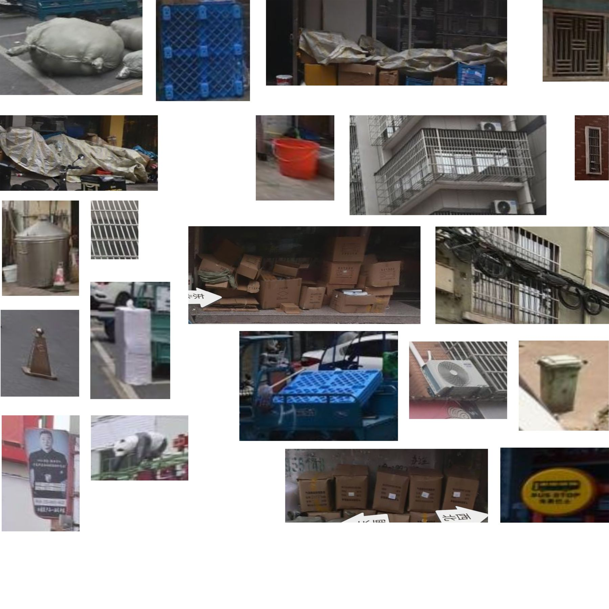
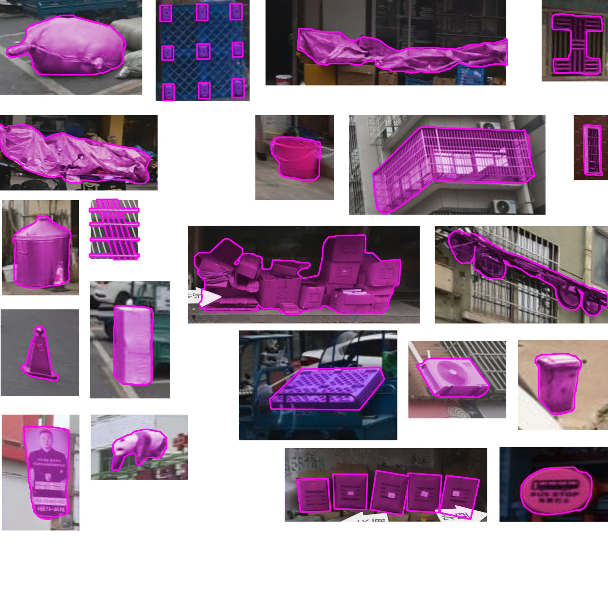
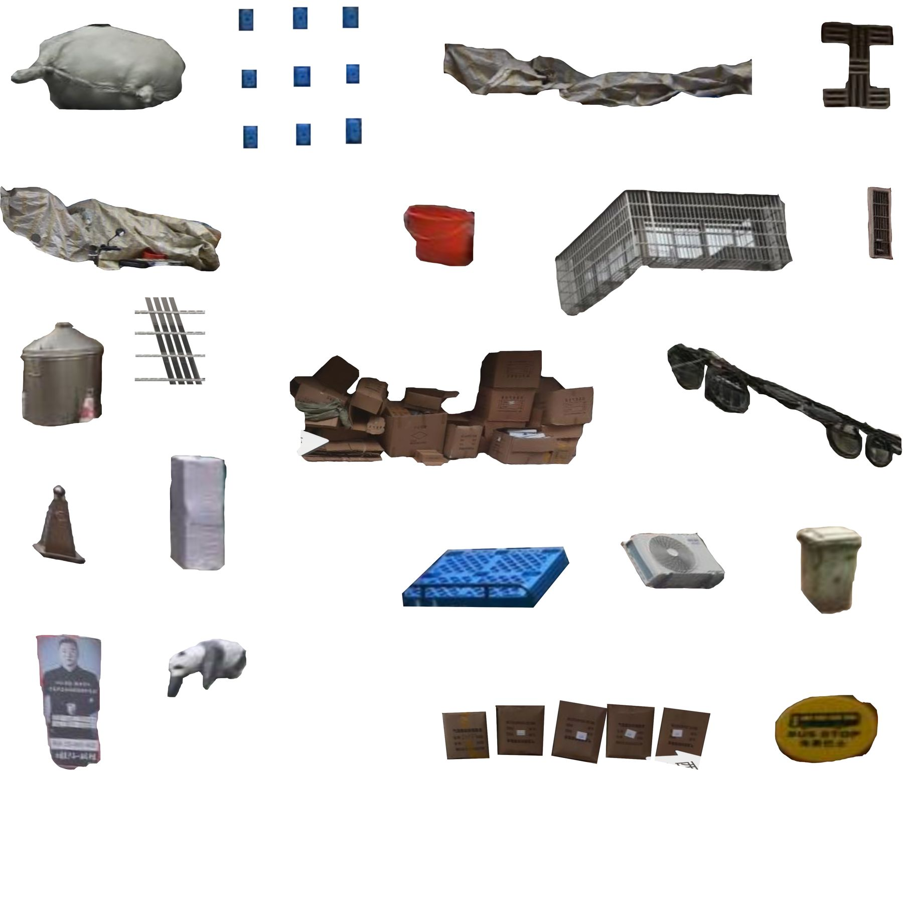

Carving instructions
07a · pattern grammar → skin studyInside a rigid, standardised system, people learned to express their individuality in many small ways — slowly changing and enriching the image of the city into something unique and personal. The city block and its standardised architecture, old and new, come together in a layered, saturated agglomeration that eats the monolith to open new spaces and new light.
Street-level survey
Ordinary objects found around the site with Baidu Map street view: things people add, stack, cover and attach to standard buildings.
Object detection
Each capture is segmented; the object is separated from the street, the façade and the noise around it. Drag to compare source and masks.


Isolated objects
The masked objects are cut out and kept with their material: tarps, sacks, cartons, cages, carts. Some are lifted into volume as found specimens.

The Yiwu grammar
Each object is reduced to a black silhouette. The noun disappears, the outline survives: these 21 shapes are the vocabulary of the carving. Click a shape to toggle it in the carving below.
Eating the monolith
The massing arrives as a closed, standard monolith. Silhouettes are placed on its elevations and subtracted. Where they gather, the volume is eaten away and light enters; where they are few, the standard host remains.
To the skin study
The carved elevations go to the skin study, which builds the envelope on the massing around the openings.